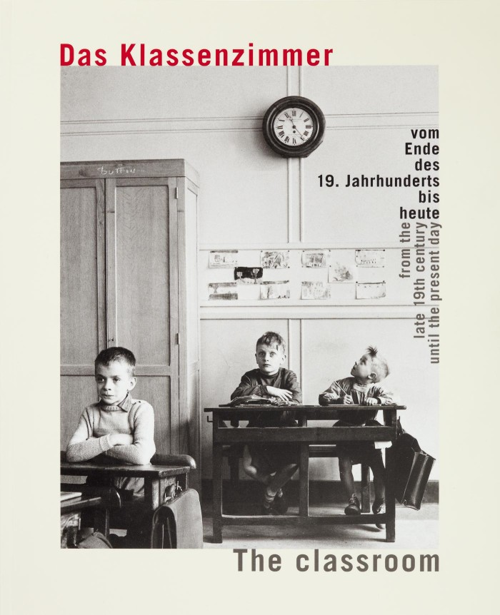
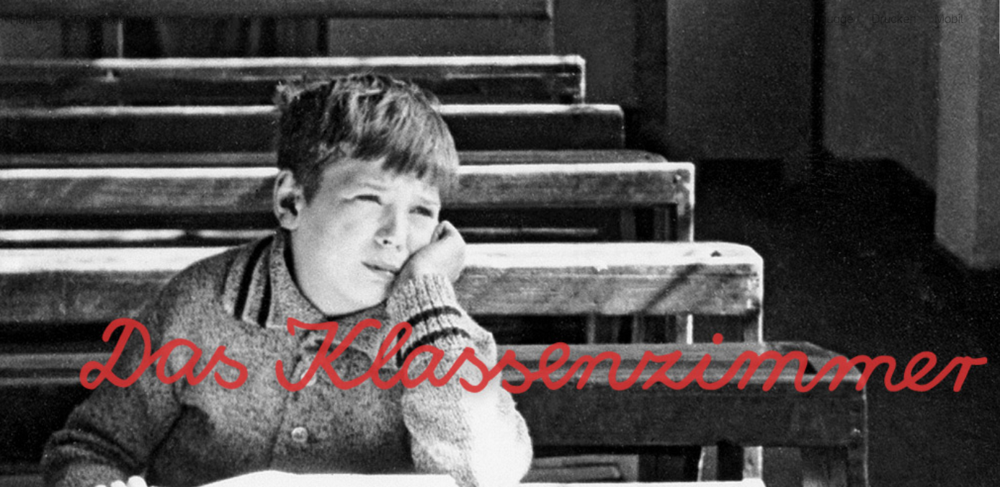
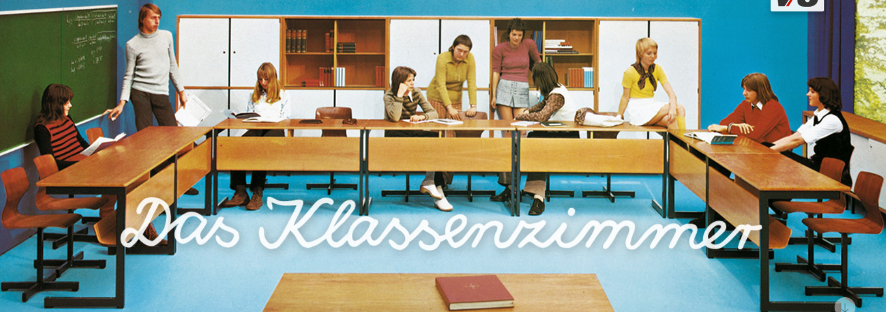

Tanulási terek mindig is léteztek. Optimalitásukat azonban nem feltétlenül modernségük adja, hanem az, hogy maximálisan ki tudják szolgálni az ott zajló tanulási folyamatokat. A tanulási terek jellemzően iskolai közegben jelentek meg sokáig, így nem véletlen, hogy a reformpedagógiai irányzatok előszeretettel nyúltak ehhez az eszközhöz, hiszen sokszor a tanulási tér egészének vagy valamely részének átstrukturálása már önmagában is hatékonyabb tanulást eredményezett. A Montessori-intézményekben jelent meg először például a gyermekméretű bútor, melyek nélkül ma már az óvodai, alsó tagozatos iskolai terek elképzelhetetlenek. Ennek ellenére a hagyományos iskolai tanítási modell nem változott, az iskolában tanárok tanítanak, a tudáselemek pedig tantárgyakba tömbösítve kerülnek feldolgozásra.
„A klasszikus iskola térelrendezése leginkább a kaszárnyák mintáját követi: középen udvar, folyosókon termek, amelyekben a laktanyák hálókörleteihez hasonlóan vannak elhelyezve a homogén korcsoportok tanulói. A tanterem elsődlegesen arra szolgál, hogy a tanár tudja jól végezni a munkáját. A parancsnoki hídról átlátja az osztályt, a diákok figyelme rá irányul, az osztályban az történik, amit ő akar.” (Nádori–Prievara 2018)
|  |  |

Stang (2019) azt is kiemeli, hogy a formális tanulási terek gyakran megosztottak, elhatárolódik egymástól a tanári és a tanulói zóna, illetve nagyon tanár-központúak. A tanulási tér szabja meg az ott folyó pedagógiai módszerek használatát, és nem fordítva, nem a pedagógiai módszerekhez igazítják a tanulási terek kialakítását.
E téren némi változást csak az oktatástechnológia fejlődése hozott, hiszen az IKT-eszközök megjelenésével a technológia is kezdett a mindennapi tanítás részévé válni. A lényeg azonban még mindig az, hogy a hagyományos osztályterem struktúrája a tanár-diák viszony erősen hierarchizált üzenetét hordozza, mely a tanulót önkéntelenül passzív szerepbe helyezi. Az eredmény, fáradt és kiégett, új módszerek és lehetőségek után kutató pedagógusok, valamint passzív diákok, otthoni tanulás, különórák, fáradt hétvégék. Környezetünk éppúgy fel tud tölteni pozitív inputokkal, mint negatívakkal, ezért különösen fontos, hogy a diák milyen iskolai közegben tölti napjai nagy részét. Hozzá kell vennünk továbbá azt is, hogy „az igényes környezet igényes ember nevel” (AKG 2009), ezért óriási jelentőségük van az újgenerációs tanulási tereknek.
A tanulási terek mindezek ellenére mégsem kerültek sokáig a kutatók figyelmébe az 1980-as évek végéig, amikor a tudományos elméletek hirtelen nagy érdeklődéssel kezdték el vizsgálni a tér tudományterületükre való hatását és összefüggéseit (pl. nyelvészet, szociológia), noha erre a „térbeli fordulatra” (’spatial turn’) a magyar neveléstudomány kissé lassan reagált (v.ö. Hercz–Sántha 2009:78, Sántha 2018:52). A vizsgálatok elsősorban a pedagógiai tér és az egyéni tér kölcsönhatásaira terjedtek ki, a téri információk dokumentálása és értelmezése azonban még váratott magára a 2000-es évekig. Sántha Kálmán (2018) kidolgozott a pedagógiai terek értelmezésére egy módszert (Visual Grounded Theory), amely képi információk kódolásával a pedagógiai terek működésének és jellemzőinek feltárására alkalmas.
Nemzetközi szinten a ’90-es évek azzal teltek, hogy az intézmények igyekeztek a berobbanó IKT-eszközök beszerzését a látogatóik számára elérhetővé tenni, financiálisan minden erőforrást erre fordítottak. Ez az összeg azonban napjainkra már csökkent, hiszen a diákok nagy része rendelkezik saját IKT-eszközzel (laptop, asztali gép), így lehetőség nyílhat ezeket a pénzügyi erőforrásokat a térdesign felé átcsoportosítani (Brown–Long 2006). Az átalakításra annál is inkább szükség lenne, hiszen eddig az volt főként a jellemző, hogy a tanulás az otthonunkban jelen volt, most viszont az a tendencia látszik körvonalazódni, hogy a tanulás helyszíne kezd egyre inkább „otthonosodni”.